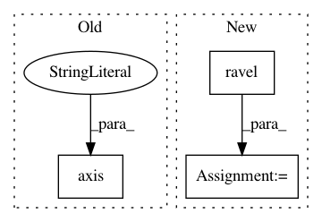

493c862567da8e61ba3f21883e680de00dd0531e,doc/examples/edges/plot_edge_filter.py,,,#,18
Before Change
ax0.imshow(img, cmap=plt.cm.gray)
ax0.set_title("Original image")
ax0.axis("off")
ax1.imshow(edge_scharr, cmap=plt.cm.gray)
ax1.set_title("Scharr Edge Detection")
ax1.axis("off")
After Change
fig, axes = plt.subplots(nrows=2, ncols=2, sharex=True, sharey=True,
figsize=(12, 12))
ax = axes.ravel()
ax[0].imshow(img, cmap=plt.cm.gray)
ax[0].set_title("Original image")
ax[1].imshow(edge_scharr, cmap=plt.cm.gray)
ax[1].set_title("Scharr Edge Detection")
ax[2].imshow(diff_scharr_prewitt, cmap=plt.cm.gray, vmax=max_diff)
ax[2].set_title("Scharr - Prewitt")
ax[3].imshow(diff_scharr_sobel, cmap=plt.cm.gray, vmax=max_diff)
ax[3].set_title("Scharr - Sobel")
for a in ax:
a.axis("off")
plt.tight_layout()
plt.show()
In pattern: SUPERPATTERN
Frequency: 3
Non-data size: 3
Instances
Project Name: scikit-image/scikit-image
Commit Name: 493c862567da8e61ba3f21883e680de00dd0531e
Time: 2016-09-04
Author: multicolor.mood@gmail.com
File Name: doc/examples/edges/plot_edge_filter.py
Class Name:
Method Name:
Project Name: scikit-image/scikit-image
Commit Name: 04310efe19ec589234c1b9b1f3397e2418c6ff93
Time: 2016-09-04
Author: multicolor.mood@gmail.com
File Name: doc/examples/segmentation/plot_watershed.py
Class Name:
Method Name:
Project Name: scikit-image/scikit-image
Commit Name: 958f8f41da4f00c2e9c8d1be0616fcc59c5ee3f0
Time: 2017-10-21
Author: peter@goldsborough.me
File Name: doc/examples/edges/plot_random_shapes.py
Class Name:
Method Name: